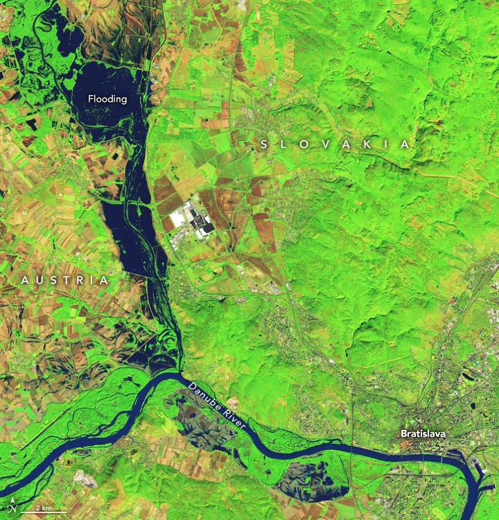

Marc Federer — Atmospheric Dynamics and Climate Science
I am a Postdoctoral Fellow in the Department of Earth, Atmospheric, and Planetary Sciences at MIT. I study how weather systems such as midlatitude cyclones shape the large-scale circulation of the atmosphere, including the jet stream and the storm tracks, and how this may change in a warmer climate.
My work draws on reanalysis data and idealised modelling. I am particularly interested in how coherent weather systems organise energy and moisture transport, how latent heating modifies Rossby wave dynamics, and what this means for climate projections and the prediction of extreme weather.
Storm tracks · Diabatic heating · Extreme weather · Predictability
Research
Moisture and the midlatitude storm tracks
Latent heat release in ascending moist air intensifies extratropical cyclones and modifies the upper-level flow, including Rossby wave propagation and breaking. This coupling between moisture and dynamics is a source of uncertainty in numerical weather prediction and contributes to the spread among climate models in projected storm track changes.
At MIT, together with Talia Tamarin-Brodsky, I study how the storm tracks supply moisture to warm conveyor belt ascent and how the resulting latent heating shapes the observed circulation. A further aim is to understand how these relationships arise and how they may change in a warmer climate.
- Diabatic heating and Rossby wave breaking
- Moisture sources of latent heat release in the storm tracks
-
Weather and Climate Dynamics · in review
-
npj Climate and Atmospheric Science · 2026
Atmospheric energy cycle
The general circulation is maintained by the conversion of available potential energy (APE) into kinetic energy. In the midlatitudes, a large part of this conversion takes place within individual baroclinic eddies rather than as a smooth, zonal-mean process.
During my PhD at ETH Zurich, I developed a local, parcel-based APE framework to quantify these conversions over the life cycle of extratropical cyclones. Applied to ERA5, it shows that hemispheric APE can decrease by up to 10% within a few days, driven by intense baroclinic conversion in a single storm track. Such events are relevant for storm track variability, extreme cyclones and subseasonal predictability.
-
Geophysical Research Letters · 2026
-
Weather and Climate Dynamics · 2025
-
Journal of the Atmospheric Sciences · 2024

Extreme weather and predictability
Persistent blocking, cyclone clustering and heavy precipitation have large societal impacts and remain difficult to predict and to represent in climate models. My interest here is in the underlying dynamics, including the role of air–sea interaction and the response of these events to warming.
I contributed to studies of the February 2019 European blocking episode and its link to air–sea interaction over the Gulf Stream, and of Storm Boris (September 2024) in the current and a future climate. I have also worked in the private sector on weather-related risk in energy and commodity markets.
-
Weather and Climate Dynamics · 2026
-
Weather and Climate Dynamics · 2024
CV
I work with Talia Tamarin-Brodsky at MIT, funded by a Postdoc.Mobility fellowship from the Swiss National Science Foundation. I obtained my PhD at ETH Zurich with Lukas Papritz, Michael Sprenger and Heini Wernli.